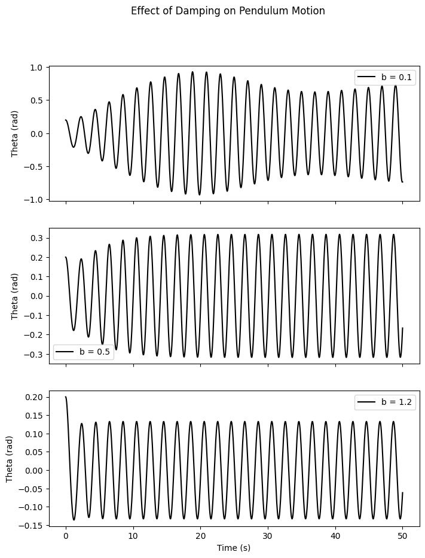
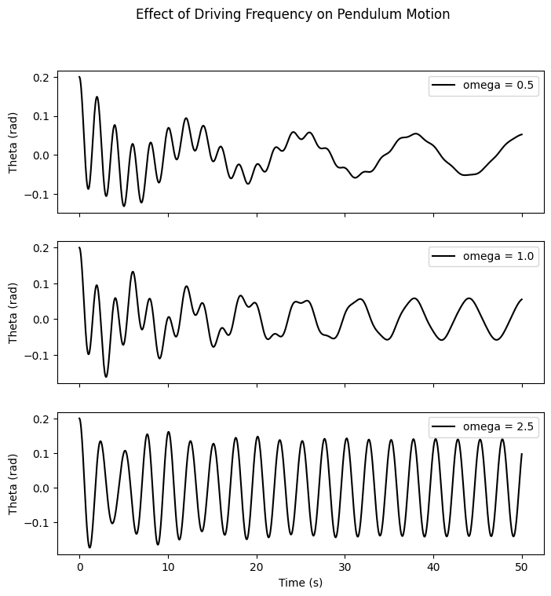
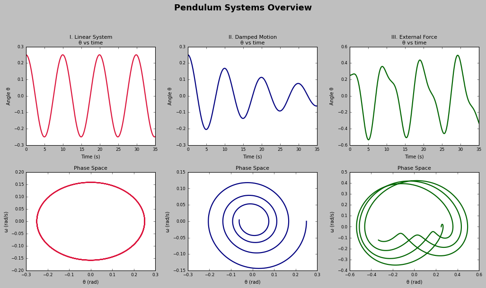
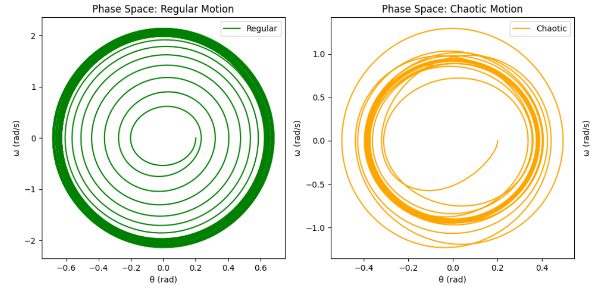
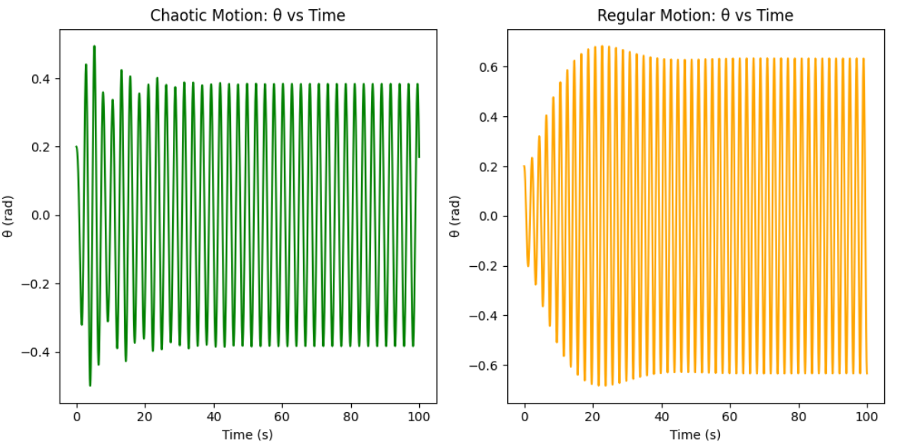

Problem 2
I. Governing Differential Equation of a Forced Damped Pendulum
The motion of a pendulum under the influence of damping and an external driving force is described by the nonlinear second-order differential equation:
Here: - \(\theta(t)\) is the angular position as a function of time, - \(b\) is the damping constant, - \(g\) is gravitational acceleration, - \(L\) is the pendulum length, - \(A\) represents the amplitude of the external periodic force, - \(\omega\) denotes the angular frequency of the driving force.
This equation is nonlinear due to the \(\sin\theta\) term.
II. Linear Approximation: Small-Angle Solution
For small oscillations where \(\theta\) is small (in radians), we apply the approximation:
This linearizes the equation:
This is mathematically equivalent to a forced, damped harmonic oscillator:
where: - \(\omega_0 = \sqrt{\frac{g}{L}}\) is the undamped natural frequency, - \(2\beta = b\) denotes the damping rate.
Steady-State Particular Solution
The long-term solution of this system is:
with:
This illustrates how both amplitude and phase lag are influenced by the driving frequency and damping.
III. Resonance Behavior and Energy Aspects
Resonant Response
Resonance manifests when the driving frequency nears the natural frequency:
However, damping causes a shift, and the maximum amplitude is observed at:
Energy Dynamics
- At resonance, energy input from the driver is maximally efficient.
- Low damping may lead to energy accumulation, possibly damaging mechanical systems.
- High damping reduces energy build-up, controlling oscillation amplitudes.
IV. Impact of System Parameters
Damping Factor (\(b\))
- Large \(b\): Overdamped; slow return to equilibrium, no oscillations.
- Moderate \(b\): Damped oscillations that decay gradually.
- Small \(b\): Persistent oscillations; greater potential for resonance or chaos.
External Force Amplitude (\(A\))
- Low values: Predictable, nearly harmonic motion.
- Medium values: System begins to display nonlinear effects.
- High values: Can result in chaotic motion and sensitivity to initial conditions.
Driving Frequency (\(\omega\))
- Low \(\omega\): The system closely follows the driver.
- Near \(\omega_0\): System exhibits peak amplitude (resonance).
- High \(\omega\): Oscillations become irregular or unstable.
V. From Predictability to Chaos
Phase Space Visualization
- Orderly motion → smooth loops (limit cycles).
- Chaotic regime → irregular, non-repeating trajectories.
Bifurcations and Chaos Onset
- System transitions via period doubling and bifurcations as \(A\) increases.
- Eventually leads to a chaotic state characterized by unpredictable long-term behavior.
Lyapunov Exponent
- Positive Lyapunov exponents signify chaotic dynamics due to extreme sensitivity to initial conditions.
VI. Real-World Relevance
Energy Scavenging Systems
- Pendulum-like devices in piezoelectric setups can convert vibrations into electricity.
Structural Engineering
- Structures such as bridges are analyzed using this model to prevent oscillation-induced collapses.
Electrical Analogues
- The damped driven pendulum has direct parallels in RLC electrical circuits used in communications and signal processing.
VII. Visual Analysis of Parameter Effects
1. Varying Damping Coefficient

As damping increases, the pendulum's amplitude diminishes and oscillations decay faster.
2. Changing Driving Amplitude

Larger \(A\) values amplify motion and introduce nonlinear effects.
3. Adjusting Driving Frequency

At resonance, oscillations peak; at high frequencies, they become erratic.
VIII. Comparing Pendulum Variants
A comparison of simple, damped, and driven pendulums using time evolution and phase portraits:

IX. Visualizing Dynamics: From Order to Chaos
Phase Space and Time Evolution

- Phase Space: Ordered motion → regular loops; chaotic → scattered structures.
 - Time Series: Predictable sinusoid in regular motion vs irregular fluctuations in chaos.